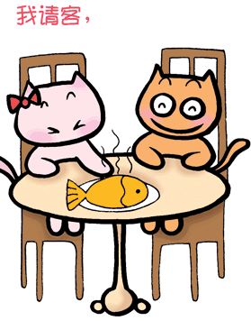

<!DOCTYPE html>
<html>
	<head>
		<meta charset="utf-8">
		<title></title>
		<style>
			canvas {
				border: 1px solid #ccc;
				display: block;
				margin: 10px auto;
			}
		</style>
	</head>
	<body>
		<!--  -->
		<canvas width="600" height="400"></canvas>
		<script type="text/javascript">
			var myCanvas = document.querySelector('canvas')
			var ctx = myCanvas.getContext('2d')
			// ctx.strokeRect(100,100,200,200)
			ctx.translate(150,150)
			// ctx.scale(0.5,1)
			// ctx.strokeRect(100,100,100,100)
			// ctx.strokeRect(100,100,200,200)
			var startAngle = 0
			setInterval(function() {
				startAngle += Math.PI / 180
				ctx.rotate(startAngle)
				ctx.strokeRect(-50, -50, 100, 100)
			}, 500)
		</script>
	</body>
</html>
